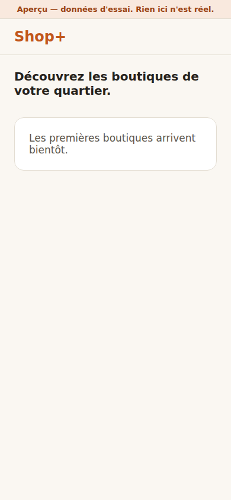
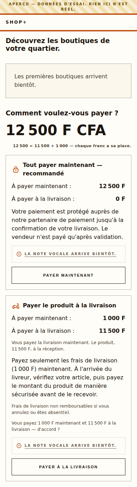
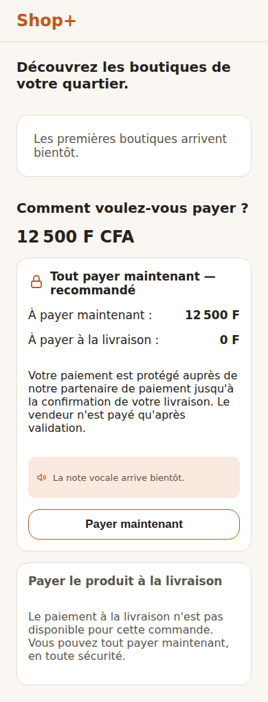
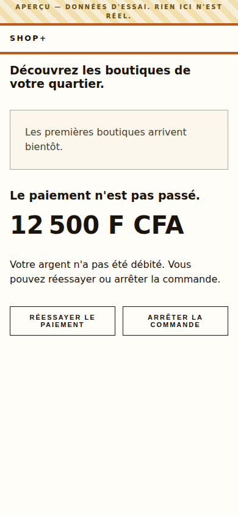
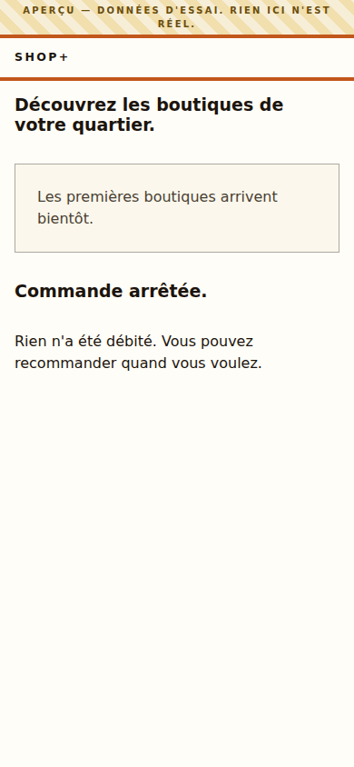
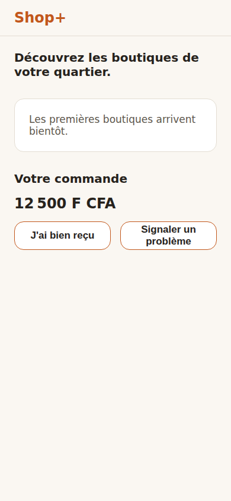
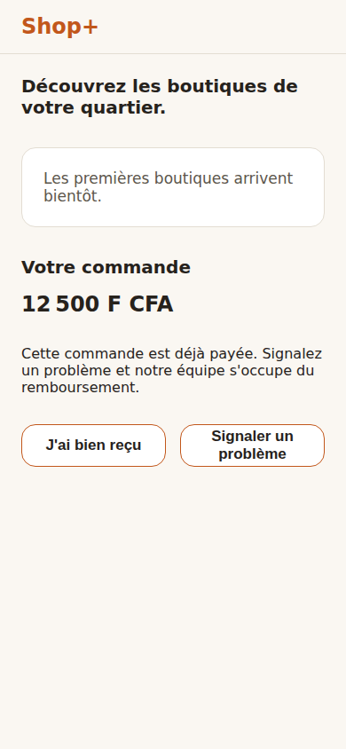
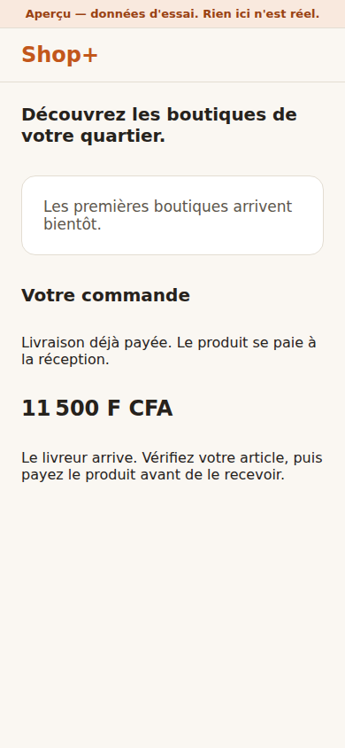
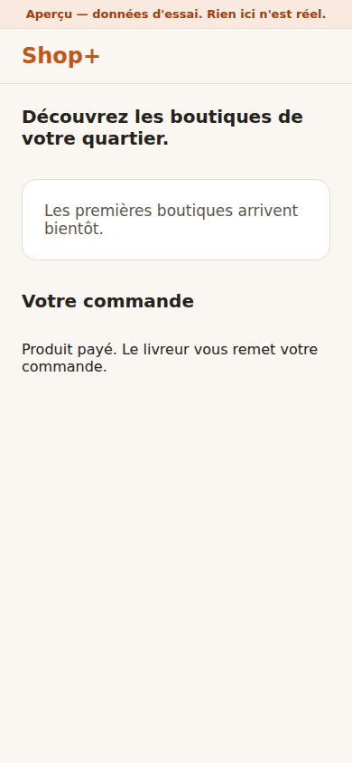

Chaque image est un état RÉELLEMENT construit, capturé automatiquement (bac à sable — aucune donnée réelle).
Accueil

Découverte — l'état vide honnête (aucune boutique encore)
Paiement — les deux options (§6.1)

Les deux options côte à côte : tout payer maintenant, ou l'essentiel à la porte

Option à la porte indisponible — l'état est expliqué, jamais un mur d'erreur
Ma commande — les états honnêtes

Paiement échoué — réessayer et abandonner ont le MÊME poids (chemin du problème, M4)

Commande annulée — l'état est dit calmement, cause et suite en mots simples

Commande confirmée — signaler un souci est aussi visible que confirmer la réception

Annulation refusée après paiement — le chemin du problème garde toute sa place

Paiement à la porte EN ATTENTE — le montant dû à la livraison, en clair

Paiement à la porte CONFIRMÉ par le réseau
États nommés sans écran (les manques, jamais silencieux)
File hors ligne (offline queue) — État non construit dans la PWA acheteur à ce jour — aucun écran à capturer ; nommé ici plutôt que passé sous silence.
Suivi du colis (tracking) — Écran non construit dans la PWA acheteur à ce jour — le suivi vit côté console Séra ; nommé ici plutôt que passé sous silence.
Parcours revendeuse (app RN, WO-4.1) — accueil · opportunités · sélection · vitrine · lien signé · gains — Ces écrans existent dans l'app revendeuse (React Native, aperçu Expo Go) — cette galerie Playwright ne capture que la PWA acheteur ; le canal visuel du parcours revendeuse est WALKTHROUGH.md + l'aperçu Expo Go. Nommés ici plutôt que passés sous silence.